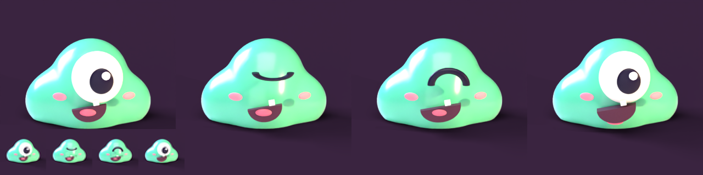
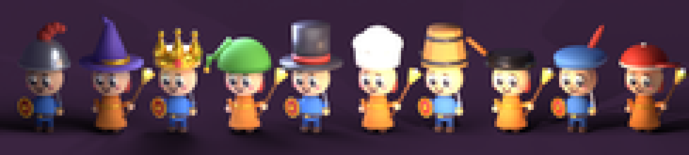
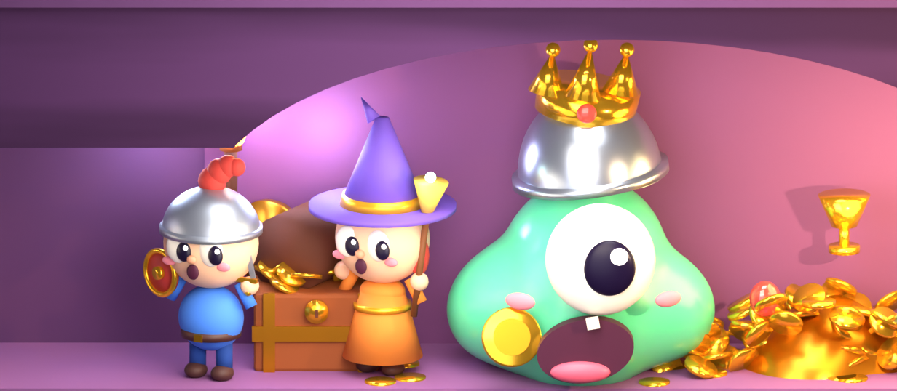
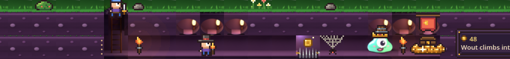

Sinds je laatste blad is het spel van pixels naar 3D gegaan: alles wordt in Blender gemaakt met code en als plaatje in het spel gezet. Gloop staat al zo in de Windows-build. Hieronder wat er nu is, eerlijk met wat nog niet af is.
Rust, knipper, blij en hap. Linksonder op ware grootte in het spel: je leest alle vier.

Ridder en heks, elk met een willekeurige hoed. Precies die hoed belandt op Gloops toren als hij ze opeet. Dezelfde 10 hoeden als nu in het spel, maar groter en in 3D.

Gloop met hoedentoren hapt naar twee geschrokken helden bij de schat. Titel komt erbij; dit is de richting, niet het eindbeeld.

De 3D-grond staat op een tak. Wat je nog ziet: lichtvlakken die op de rand van een tegel stoppen, drie gelijke kamers bovenin, en struik, fakkels en helden nog in pixels. Dat lossen we eerst op.
